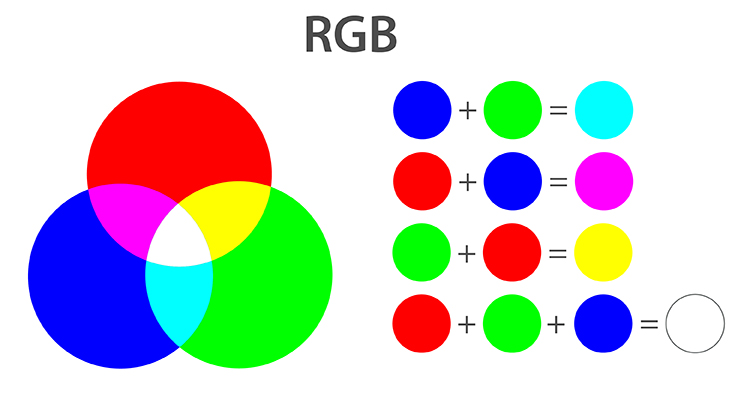

Wat zijn kleurmodellen en waarom worden ze gebruikt ?
Kleurmodellen zijn min of meer systemen die worden gebruikt om kleuren te beschrijven, gecategoriseerd in verschillende moddelen (RGB of CMY) en exact kunnen worden gereproduceerd op een digitale scherm, in drukwerk of in een andere vorm.
Het is hulpvol voor gebruikers die werken met visuele media, omdat hen in staat stelt om de gewenste kleuren effectief te realiseren.
Pixels
Beeldschermen bestaan uit miljoenen pixels oftewel "beeldpunten". Elke pixel bestat uit dire subpixels. Deze kunnen afzonderlijk aan- of uitgeschakeld, of in intensiteit worden aangepast. Door deze afwisselingen te combineren, kunnen talrijke verschillende kleuren worden geproduceerd. Wanneer deze pixels tegelijkertijd licht uitstralen, vormen ze uiteindelijk het volledige beeld op het scherm die wij zien.
Twee Kleurmodellen die regelmatig worden gebruikt zijn:
RGB-kleursysteem
Het RGB-kleursysteem is een kleurcodering om kleuren te creëren met behulp van een combinatie uit drie primaire additieve kleuren rood, groen en blauw, vandaar de afkorting RGB. De kleuren worden gevoegd aan een zwarte scherm. Wanneer je blauw kleur wilt maken, gebruik je de drie kleuren met decimalen tussen de 0 en de 255. Omdat de computer niet met procenten werkt. Dus blauw ≠ rood:0% + groen: 0% + blauw: 100%, maar blauw = (0,0,255). Ze worden voornamelijk gebruikt voor kleuren op een beeldscherm: computers, tablets, smartphones en televisies.

CMY-kleursysteem
In tegenstelling tot het RGB-kleursysteem, dat voor digitale schermen wordt gebruikt en aan een zwarte scherm wordt toegevoegd, werkt het CMY-kleursysteem anders. Het CMY-kleurmodel wordt voornamelijk gebruikt in de druktechniek op een witte achtergrond. Dit model bestaat uit de kleuren cyaan, magenta en geel, door deze kleuren met elkaar te mengen, kunnen heleboel verschillende kleuren gecreëerd worden.
Soms zie je dat er ook een CMYK-model wordt gebruikt. Dit systeem is belangrijk voor het drukken, omdat het helpt bij het creëren van donkere kleuren. Wanneer je cyaan, magenta en geel mengt, krijg je meestal een donkergrijs in plaats van puur zwart. Daarom wordt de "K" (die staat voor "Key" of "Black) toegevoegd aan het model.